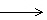
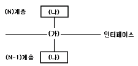

사무자동화산업기사 (2002-08-11 기출문제)
1과목: 사무자동화 시스템
1. 데이터베이스 언어가 아닌 것은?
- 데이터 조작어(DML)
- 데이터 정의어(DDL)
- 호스트(host) 언어
- 질의어(Query Language)
(정답률: 67%)

2. 다음 중 OA의 요소 기술이 아닌 것은 ?
- 정보처리 기술
- 통신기술
- 정보의 축적, 검색기술
- 정보의 암호화, 복호화 기술
(정답률: 75%)
3. 사무자동화의 실현을 위한 공간설계 기술 중 가장 크게 고려해야 할 요소는?
- 인간중심의 환경조성
- 기기중심의 환경조성
- 사무공간 중심의 환경조성
- 업무절차 중심의 환경조성
(정답률: 56%)
4. 컴퓨터시스템이 중앙 집중 형태의 시스템에 분산처리시스템의 형태로 발전한 이유는 여러 가지 장점이 있기 때문이다. 분산처리시스템의 장점에 속하지 않는 것은?
- 자원공유(resource sharing)
- 연산속도향상(computation speed-up)
- 신뢰성(reliability)
- 창조성(creation)
(정답률: 61%)
5. 사무자동화의 발생 배경요인에 대한 설명 중 알맞지 않은 것은?
- 오피스 부문의 저생산성
- 사무근로자 및 문서의 감소 추세
- 정보산업으로의 발전 및 확대
- 컴퓨터 하드웨어와 소프트웨어의 급진적인 발달추세
(정답률: 65%)
6. 사무자동화를 통한 생산성 향상의 척도 기준으로 적합하지 않은 것은?
- 효율성
- 기기의 독립성
- 유효성
- 창조성
(정답률: 74%)
7. "의사 결정 지원을 위한 주제 지향적이고 통합적이며, 시계열적(historical)이고 비휘발적인 데이터의 집합"을 무엇이라고 하는가?
- OLTP
- Middleware
- Data Warehouse
- Groupware
(정답률: 57%)
8. 응용 소프트웨어(Application Software)분류 중 사용자를 위한 공통적인 정보처리작업을 수행하는 프로그램으로 워드프로세싱, 스프레드시트, 그래픽 등이 속하는 분야는?
- 사업용 응용프로그램
- 과학용 응용프로그램
- 범용 응용프로그램
- 설계용 응용프로그램
(정답률: 65%)
9. 사무자동화시스템의 주요기능과 거리가 먼 것은?
- 문서화 기능
- 정보 활용 기능
- 통신 기능
- 분업화기 능
(정답률: 71%)
10. 컴퓨터에게 중앙처리장치와 별도로 I/O를 위한 전용의 프로세서를 두는 이유는? (단, I/O 프로세서를 IOP라고도 함)
- IOP가 제어신호를 잘 받을 수 있도록 한다.
- CPU가 입· 출력을 제어해야 하는 부담을 덜어줌으로써 전체 처리속도의 향상을 가져온다.
- IOP가 입· 출력에 관계되는 일을 CPU에게 지시할 수 있도록 하여 프로그램의 로드를 줄인다.
- 프로세서를 여러 개 두어 회로를 단순하게 한다.
(정답률: 74%)
11. 다음 중 보조기억장치에 해당되지 않는 것은?
- 자기코어
- 자기드럼
- 자기디스크
- 자기테이프
(정답률: 51%)
12. Accumulator(누산기)의 설명으로 가장 적합한 것은?
- 자료를 이동시키거나 자료의 입, 출력을 제어하는 레지스터
- 연산 명령의 순서를 기억하고 있는 주기억장치의 레지스터
- 산술 및 논리연산의 결과를 일시적으로 기억하는 레지스터
- 명령어 처리에 필요한 실제 데이터가 들어있는 기억장소를 구하는 레지스터
(정답률: 83%)
13. 그룹웨어의 기능에 대한 설명으로 적절하지 못한 것은?
- 전자우편이나 게시판을 통하여 정보를 공유할 수 있다.
- 지역적으로 떨어져 있는 경우 컴퓨터를 이용하여 전자적으로 회의를 할 수도 있다.
- 비즈니스 규칙이나 작업자들의 역할에 따라 그룹의 업무 처리흐름을 자동화하는 워크플로우 기능이 있다.
- 결재 부문은 전자결재의 위험성을 무시할 수가 없어 반드시 전통적인 방법으로 결재를 한다.
(정답률: 77%)
14. 인터넷을 통한 전자상거래(EC; Electronic Commerce)의 효과로서 적당하지 않은 것은?
- 잠재고객의 확보와 물리적 제약 극복
- 소비자의 다양한 정보와 선택의 다양화
- 기밀성과 익명성의 보장
- 구매자의 비용절감
(정답률: 61%)
15. VDT 증후군을 예방하기 위해서 취할 수 있는 대책과 거리가 먼 것은?
- 작업환경과 노무관리 측면의 개선
- 단말기 조작시 바른 자세를 유지
- 작업휴식에 대한 가이드라인(guideline) 준수
- 효과적인 커뮤니케이션 설계
(정답률: 80%)
16. 정보통신 기술의 향상으로 등장한 새로운 데이터베이스의 형태와 거리가 먼 것은?
- 하이퍼링크(Hyperlink)
- 하이퍼텍스트(Hypertext)
- 하이퍼미디어(Hypermedia)
- 지식기반 데이터베이스(Knowledge-based database)
(정답률: 37%)
17. Zisman의 사무자동화 정의에 포함되지 않는 것은?
- 컴퓨터 기술
- 통신기술
- 인터넷 기술
- 시스템 과학
(정답률: 59%)
18. 애니메이션 기법에서 한 이미지에서 다른 이미지로 변형시키는 기술을 무엇이라 하는가?
- Morphing
- Warping
- Modeling
- Rendering
(정답률: 59%)
19. 사무자동화의 등장요인이 될 수 없는 것은?
- 정보화 사회의 출현으로 사무실에서 처리해야 할 정보의 양이 증대되었다.
- 사무업무에 대한 기존의 인식이 변화되었다.
- 이미지, 소리, 그래픽과 같은 다양한 형태의 정보처리가 가능하게 되었다.
- 공장의 자동화가 이루어졌기 때문에 사무자동화의 차례가 되었다.
(정답률: 83%)
20. 사용자가 작성한 프로그램, 즉 기계어로 번역되기 이전의 프로그램을 무엇이라고 하는가?
- 원시프로그램
- 목적프로그램
- 제어프로그램
- 처리프로그램
(정답률: 78%)
2과목: 사무경영관리 개론
21. 정보기술을 활용하여 행정기관의 사무를 전자화함으로써 행정기관 상호간 또는 국민에 대한 행정업무를 효율적으로 수행하는 정부를 무엇이라고 하는가?
- 전자정부
- 국민의 정부
- 문민정부
- 지식산업정부
(정답률: 69%)
22. 사무 관리의 기능을 가장 적합하게 정의한 것은?
- 조직의 효율성제고를 위해 장래를 예측하는 기능
- 경영내부의 여러 기능과 활동을 효과적으로 달성하기 위한 조정, 지휘, 통제에 관한 기능
- 사무에 관련된 기능만 모아 통합처리 하는 기능
- 인적자원관리에 관한 업무를 주로 담당하는 기능
(정답률: 76%)
23. 전자상거래(EC)의 장점이 아닌 것은?
- 시간적 공간적 제약이 없다.
- 유통 비용과 건물 임대료 등의 운영비를 크게 줄일 수 있다.
- 상품의 질과 지불, 배달 체계가 안전하다.
- 전세계 네티즌을 대상으로 할 수 있다.
(정답률: 74%)
24. 사무작업의 효율화를 기하기 위해서는 절차, 서식, 작업시간을 단축하거나 간소화해야 하는데, 다음 사항 중 사무 간소화에 해당하지 않는 것은?
- 본질적이 아닌 작업을 제거한다.
- 사무작업에서 불필요한 단계나 복잡성을 제거한다.
- 사무작업 속도를 증가시켜 종래보다 많은 일을 한다.
- 각 작업 단순화를 이룩하여 사무중복을 최소화한다.
(정답률: 78%)
25. 원프로그램의 일련의 지시, 명령의 전부 또는 상당부분을 이용하여 새로운 프로그램을 창작하는 것은?
- 복제
- 개작
- 발행
- 저작
(정답률: 71%)
26. 사무계획화의 대상으로 볼 수 없는 것은?
- 사무 작업의 개선 발전을 위한 사항
- 유효적절한 정보처리 문제
- 임금 인상을 위한 사항
- 사무 진행상 더욱 능률적으로 유기적인 관계를 유지하도록 하는 사항
(정답률: 89%)
27. 다음 중 조사검사ㆍ조회 혹은 평가 등의 방법으로써, 무질서하게 행해지는 산발적인「체크」 정도이거나 혹은 일정한 룰에 기초한 표본 조사인 사무통제 방법은?
- 집중화
- 감사
- 예산
- 절차
(정답률: 78%)
28. 사무 작업의 측정법과 가장 거리가 먼 것은?
- 경험적 측정법
- 워크 샘플링법
- PTS법
- 추상적 측정법
(정답률: 74%)
29. 프로젝트 조직과 기능식 조직을 합한 조직형태는 어떤 조직인가?
- 행렬조직
- 혼합프로젝트조직
- 직능별조직
- 사업부제조직
(정답률: 30%)
30. 사무계획 중에서 특정 상황에 대응하여 그 때마다 만들어지는 계획을 무엇이라 하는가?
- 고정계획
- 구조계획
- 표준계획
- 개별선정계획
(정답률: 75%)
31. 현대경영을 정보와의 싸움으로 보고 더욱 풍부하고 질이 좋은 정보를 보다 빨리 얻고 신속하게 이해하는 것만이 경쟁에서 승리할 수 있다고 정보관리의 중요성을 강조한 사람은?
- 맥도노우(McDonough)
- 드럭커(Drucker)
- 포레스터(Forrestor)
- 레핑엘(Leffingwell)
(정답률: 40%)
32. 전자계산조직 등 각종 단말기기의 전자파 장해로부터의 보호기준 등은 어느 법령이 정하는 바에 따르는가?
- 프로그램보호법령
- 저작권법령
- 정보화촉진기본법령
- 전파법령
(정답률: 62%)
33. 사무량을 측정하기에 부적당한 사무는?
- 일상적으로 일정한 처리방법으로 반복되는 사무
- 상당기간 내용적으로 처리방법이 균일하여 변동이 별로 없는 사무
- 성과 또는 진행상황을 수치화하여 일정단위로서 계산할 수 있는 사무
- 조사기획과 같은 비교적 판단 및 사고력이 요구되는 사무
(정답률: 77%)
34. 사무의 계획화란 어느 활동을 말하는가?
- 목적수행에 필요한 요구 대 공급비의 개발
- 결과에 대한 목표의 평가와 선정
- 기업목표에 대한 지향 활동
- 사무작업의 표준 및 조직 설정
(정답률: 36%)
35. 오피스의 기본기능에 따라 사무를 분류할 때 관계가 없는 것은?
- 의사결정
- 잡무
- 커뮤니케이션
- 데이터 처리
(정답률: 63%)
36. 다음 중 사무계획을 함으로써 얻어지는 효과로서 가장 적합한 것은?
- 사무원의 여유시간이 단축됨에 따라 사무업무가 중복이 된다.
- 중요한 업무를 중요하지 않은 업무보다 선행하여 처리한다.
- 관리자보다 작업자가 행동방침을 결정하게 되어 능률적인 작업을 한다.
- 업무량이 늘어나게 되어 고용증대 효과가 발생한다.
(정답률: 61%)
37. 문서를 보존하는 기본적 태도가 아닌 것은?
- 보존문서는 가능한 한 줄여야 한다.
- 권위가 없는 문서는 보존기간을 최소화한다.
- 문서보존규정을 만들어 준수한다.
- 가능한 한 폐기하지 않는다.
(정답률: 87%)
38. 다음 중 사무의 본질을 기능적 측면에서 구분한 것은?
- 대화와 독해기능
- 독해와 정보처리기능
- 정보처리와 결합기능
- 사서와 분류정리기능
(정답률: 70%)
39. 사무의 난이도별 분류에 따른 현대 사무의 지향하는 목표로 옳은 것은?
- 본래 사무를 지원 사무화 한다.
- 지원 사무를 본래 사무화 한다.
- 판단 사무를 작업 사무화 한다.
- 작업 사무를 판단 사무화 한다.
(정답률: 32%)
40. 사무관리의 대상이 아닌 것은?
- 정보처리활동 주체의 관리
- 정보처리 도구의 관리
- 정보처리 목적의 관리
- 정보처리가 이루어지는 장소적 관리
(정답률: 27%)
3과목: 프로그래밍 일반
41. 기계어와 가장 유사한 언어는?
- Cobol
- Assembly
- C
- Basic
(정답률: 68%)
42. C 언어의 자료 형이 아닌 것은?
- long
- integer
- float
- double
(정답률: 80%)
43. 인터프리터(Interpreter) 기법을 사용하는 언어는?
- BASIC
- C
- PASCAL
- PL/1
(정답률: 58%)
44. 정규표현(Regular Expression)을 받아들이는 효율적인 오토마타(automata)는?
- 유한 상태 오토마타
- 푸시다운 오토마타
- 튜닝 머신
- 선형 제한 오토마타
(정답률: 68%)
45. 10진수 634를 BCD 코드로 표현한 것은?
- 011000110100
- 001100110100
- 011000110011
- 001100110011
(정답률: 48%)
46. 스트림 자료의 활용이 가장 많은 언어는?
- SNOBOL
- Prolog
- C++
- Ada
(정답률: 65%)
47. 주어진 문장이 정의된 문법 구조에 따라 정당하게 하나의 문장으로서 합법적으로 사용될 수 있는가를 확인하는 작업으로 토큰들을 문법에 따라 분석하는 작업을 수행하는 단계는?
- 어휘분석(Lexical analyzer) 단계
- 구문분석(Syntax analyzer) 단계
- 중간코드생성(Intermediate code generation) 단계
- 코드 최적화(Code optimization) 단계
(정답률: 52%)
48. C 언어의 기억 클래스에 해당하지 않는 것은?
- 내부 변수(internal variable)
- 자동 변수(automatic variable)
- 레지스터 변수(register variable)
- 정적 변수(static variable)
(정답률: 60%)
49. 고급 언어로 작성된 프로그램을 구문 분석하여 파서에 의하여 생성되는 결과물로서, 각각의 문장을 문법 구조에 따라 트리 형태로 구성한 것은?
- 어휘트리
- 구조트리
- 파스트리
- 중간트리
(정답률: 85%)
50. 요소 선택과 삭제는 한쪽에서, 삽입은 다른 쪽에서 일어나도록 제한하는 것은?
- 큐
- 스택
- 트리
- 방향 그래프
(정답률: 61%)
51. BNF 심볼에서 정의를 나타내는 기호는?
- ㅣ
- ::=
- < >
- ==
(정답률: 84%)
52. 재배치 형태의 기계어로 된 여러 개의 프로그램을 묶어서 로드 모듈을 작성하는 것은?
- 로더(loader)
- 운영체제(operating system)
- 프리프로세서(preprocessor)
- 링키지 에디터(linkage editor)
(정답률: 58%)
53. 구조적 프로그램의 기본 구조가 아닌 것은?
- 순차(sequence) 구조
- 조건(condition) 구조
- 일괄(batch) 구조
- 반복(repetition) 구조
(정답률: 74%)
54. 이항(binary) 연산에 해당하지 않는 것은?
- AND
- OR
- XOR
- MOVE
(정답률: 89%)
55. 구문도표(syntax diagram) 표기시 사용되는 기호가 아닌 것은?
- [ ]

(정답률: 60%)
56. 정적 바인딩에 해당하지 않는 것은?
- 실행시간
- 번역시간
- 언어구현 시간
- 언어정의 시간
(정답률: 62%)
57. 시스템 프로그래밍에 가장 적당한 언어는?
- BASIC
- C
- COBOL
- FORTRAN
(정답률: 87%)
58. C 언어에서 정수형 변수 a 에 256 이 저장되어 있다. 이를 7자리로 잡아 왼쪽으로 붙여 출력하려고 할 때, 적절한 printf() 내의 % 변환문자 사용은?
- %7f
- %7d
- %-7d
- %-7i
(정답률: 49%)
59. 운영체제의 목적으로 거리가 먼 것은?
- 응답시간(turnaround time) 증가
- 신뢰성(reliability) 향상
- 처리능력(throughput) 향상
- 사용의 용이성(availability) 향상
(정답률: 76%)
60. 상향식(bottom-up) 파서에 해당하는 것은?
- Predictive parser
- LL parser
- Recursive descent parser
- Shift reduce parser
(정답률: 74%)
4과목: 정보통신 개론
61. 동기식 전송방식의 구성 형식은 동기문자와 제어정보, 데이터 블록으로 구성되는데 이러한 구성형식을 무엇이라 하는가?
- 패리티
- 프레임
- 플래그
- 싸이클
(정답률: 50%)
62. 정보 제공시 통신회선을 기간통신사업자로 부터 임차하여 사설망을 구축하고 이를 이용, 축적해 놓은 정보를 유통시키는 정보통신 서비스망은?
- LAN
- MAN
- VAN
- WAN
(정답률: 73%)
63. 다음 중에서 정보통신시스템의 발전 단계로 볼 때 최종적으로 구축하는 것은?
- 데이터 전송교환망 구축
- 광대역 데이터 전송회선 구축
- 디지털 전용회선 망 구축
- 종합정보통신망 구축
(정답률: 71%)
64. 다음 중 정보화 사회에서 정보화란 의미를 가장 잘 표현한 것은?
- 정보처리를 효율화하여 생산 활동을 높인다.
- 정보의 이용가치를 높이고, 서비스 활동을 촉진한다.
- 정보의 생성, 가공, 축적 및 활용 등의 정보 행위를 의도적으로 행하여 그 유용가치를 높이는 활동이다.
- 컴퓨터를 이용한 정보의 처리 활동을 말한다.
(정답률: 61%)
65. 다음 그림은 OSI 7계층 모델의 개념도이다. (가)부분에 해당하는 것은?

- Entity
- Service Primitive
- Process
- SAP(Service Access Point)
(정답률: 49%)
66. 정보통신망(전산망) 상호간을 연결할 때 시설, 운영 및 유지, 보수의 책임한계를 구분하기 위한 접속점을 무엇이라고 하는가?
- 연결점
- 구분점
- 분기점
- 분계점
(정답률: 60%)
67. 다음 중 캡슐화(encapsulation)에 사용되는 제어 정보가 아닌 것은?
- 주소
- 오류검출 부호
- 프로토콜 제어
- 동기화
(정답률: 45%)
68. 양방향으로 신호의 전송이 가능하기는 하나 실제 동시전송은 이루어지지 않고 반드시 한쪽 방향으로만 전송이 이루어지는 통신방식은?
- 반이중통신
- R/TV 통신
- 단향통신
- 전이중통신
(정답률: 65%)
69. OSI의 7레벨 계층 중 데이터링크 계층(data link layer)에 대한 설명으로 가장 적합한 것은?
- 전기통신회선에 대한 물리적인 매체 및 전기적 제어기능을 수행한다.
- 인접시스템간의 데이터 전송수행기능을 표시한다.
- 데이터시스템간의 중계기능과 네트워크의 보안기능을 수행한다.
- 전이중, 투과적 전송서비스를 위한 엔드-투-엔드 제어기능을 수행한다.
(정답률: 27%)
70. 정보통신망(전산망)에 관한 기술의 표준화업무를 수행하는 곳은?
- 한국정보통신기술협회
- 한국전산원
- 한국전자통신연구원
- 한국통신
(정답률: 54%)
71. 정보통신시스템 중 데이터 전송계에 속하지 않는 것은?
- 단말장치
- 중앙처리장치
- 통신제어장치
- 데이터전송회선
(정답률: 60%)
72. 대학, 병원 및 연구소 등 근거리 통신망이 필요하면서도 여건이 안되는 기관 간에 인근 전화국의 데이터 교환망과 기존통신망을 연동시켜 구성하는 통신망은?
- PBX
- CO-LAN
- VAN
- MAN
(정답률: 47%)
73. 우리나라에서도 최근 초고속정보통신망 사업이 진행되고 있다. 이 통신망사업에서 주통신선로로 쓰이는 것은?
- 4가닥 전화선로
- 2가닥 전화선로
- 동축케이블
- 광섬유케이블
(정답률: 83%)
74. 10 Base T 근거리통신망의 특성을 올바르게 나타낸 것은?
- 10Mbps Speed, Baseband Signaling, Twisted pair cable
- 10Gbps Speed, Baseband Signaling, Twisted pair cable
- 10Kbps Speed, Broadband Signaling, Twisted pair cable
- 10bps Speed, Broadband Signaling, Twisted pair cable
(정답률: 48%)
75. 다음 중 세션계층의 기능이 아닌 것은?
- 논리적 동기제어
- 응용 프로세스 간 접속설정 및 해제
- 긴급데이터전송기능
- 다중화 제어
(정답률: 35%)
76. 4800[baud]의 모뎀이 2 bit를 사용하는 경우 데이터의 전송속도[bps]는 ?
- 19600
- 9600
- 4800
- 2400
(정답률: 62%)
77. 컴퓨터 시스템의 중앙처리장치로서 입력장치, 기억장치, 연산장치, 출력장치에게 동작을 명령, 감독, 통제하는 장치는?
- 제어장치
- 주기억장치
- 논리연산장치
- 주변장치
(정답률: 65%)
78. 다음 중 무선계 뉴미디어에 속하는 것은?
- LAN
- ISDN
- VAN
- Teletext
(정답률: 60%)
79. 다음 중 패킷교환방식에 대한 설명 중 맞는 것은?
- 접속에는 긴 시간이 소요되나 전송지연은 거의 없다.
- 패킷전송은 음성전송보다 데이터전송에 더 적합하다.
- 전송효율을 높이기 위해 패킷들은 항상 동일한 경로를 통해 전송된다.
- 통신시간, 거리가 비용의 주요 기준이 되며 통신량과는 무관하다.
(정답률: 49%)
80. 다음 중 서로 관계가 올바르게 짝지어진 것은?
- 아날로그 데이터를 아날로그신호로 변조 : PCM
- 디지털 데이터를 아날로그 신호로 변조 : FSK
- 아날로그 데이터를 디지털 신호로 변조 : DSU
- 디지털 데이터를 디지털 신호로 변조 : CODEC
(정답률: 40%)